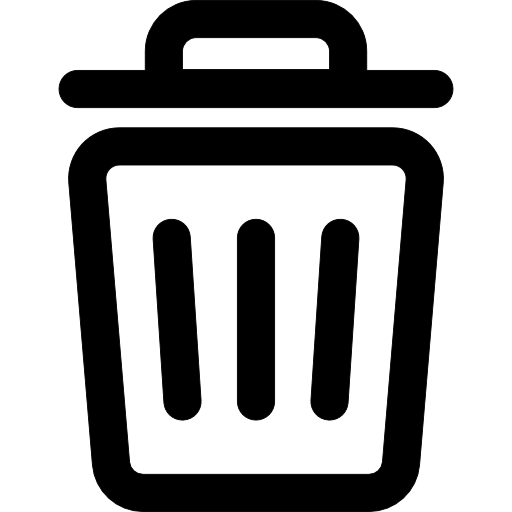

¿Qué son los iconos?
Los iconos son pequeñas imágenes encargadas de transmitir el contenido con solo mirarlos.
Ejemplo
Al ver este icono, rápidamente lo asociamos con borrar/eliminar algo.
Fuentes de iconos
Actualmente existen librerías con iconos listos para usar en nuestra web. A continuación te voy a mostrar las librerías más usadas y a cómo insertarlas en tu web.
Flaticon
Para añadir Iconos de FlatIcons a tu proyecto debemos de:
- Entrar en FlatIcon y nos creamos una cuenta.
- En la parte superior derecha nos aparecerá una sección que dice “Colecciones”, entramos dentro.
- Nos descargamos la colección y la colocamos en la carpeta css de nuestro proyecto.
- Cargamos con
<link rel="stylesheet" type="text/css" href=“css/flaticon.css">nuestra biblioteca de iconos. - Con las clases (escribiendo el nombre del icono) conseguimos que se muestre
<i class="flaticon-airplane49"></i>o<span class="flaticon-airplane49"></span>
GLYPHICONS
Para añadir Iconos de Glyphicons a tu proyecto debemos de:
- Entrar en Glyphicons.
- Nos descargamos la librería.
- Colocamos la librería en la carpeta del proyecto.
- Con la clase llamamos el objeto que queramos:
<span class="glyphicon glyphicon-search" aria-hidden="true">/<span>
FONT AWESOME
Para añadir Iconos de Font Awesome a tu proyecto debemos de:
- Entrar en Font Awesome.
- Nos descargamos la librería.
- Colocamos la librería en la carpeta del proyecto.
- Con la clase llamamos el icono que queramos:
<i class="fab fa-500px"></i>
IONICONS
Para añadir Iconos de Ionicons a tu proyecto debemos de:
- Entrar en Ionicons.
- Nos descargamos la librería.
- Colocamos la librería en la carpeta del proyecto.
- Con la clase llamamos el objeto que queramos:
<ion-icon name="add"></ion-icon>
OCTICONS
Para añadir Iconos de Octicons a tu proyecto debemos de:
- Entrar en Octicons.
- En nuestro código HTML introducimos la siguiente línea para cargar la librería
<script src="https://code.iconify.design/2/2.0.3/iconify.min.js"></script> - Colocamos el siguiente código para insertar el icono
<span class="iconify" data-icon="octicon:alert-16"></span>
MATERIAL ICONS
Para añadir Iconos de Material Icons a tu proyecto debemos de:
- Entrar en Material Icons.
- Añadimos la siguiente librería a nuestro proyecto.
import { mdiAccountCheck } from '@mdi/js'; - Añadimos a nuestro proyecto el código SVG que nos ha generado.